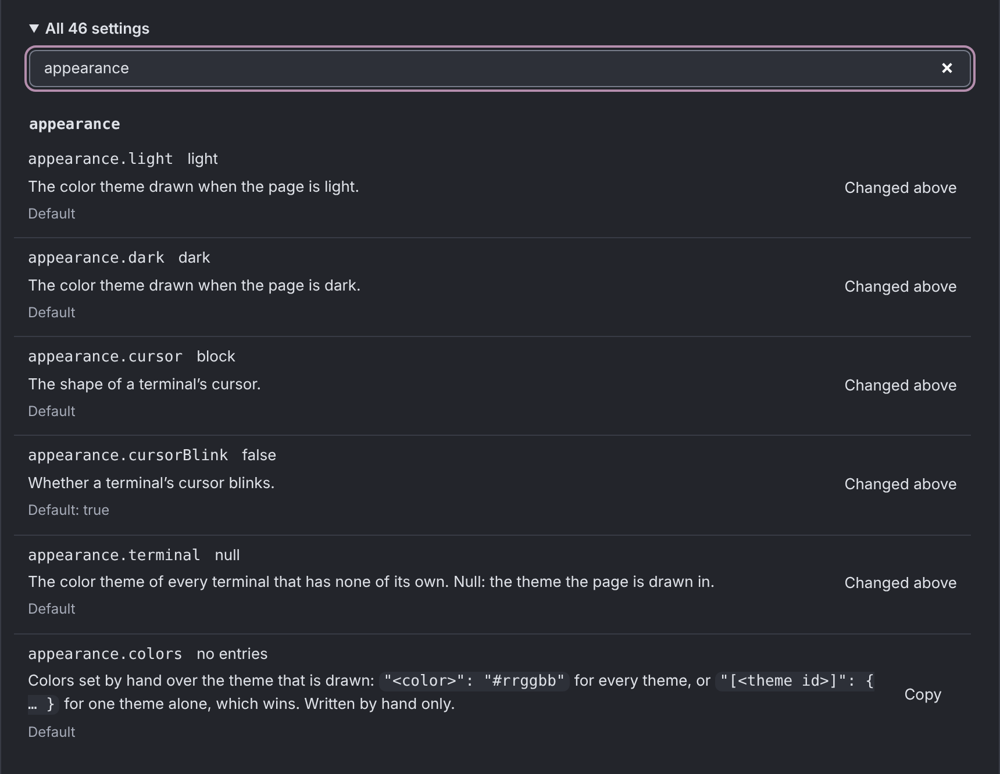

خصّص سمات الطرفية وألوانها وخطوطها ومفاتيحها
اختر ألوان الصفحة من عشر سمات، وأعطِ كل طرفية سمة خاصة بها، واضبط الألوان المفردة وخط الطرفية ومؤشرها وكل مفتاح، في Settings أو في ملف إعدادات واحد يصف نفسه.
عشر سمات ألوان، فاتحة وداكنة
يبدأ Settings → Appearance بثلاثة خيارات: Light وDark وMatch the system، وهو ما يبدأ به التثبيت الجديد ويتبع النظام حين يتغير. وتحتها تختار سمة من كل نوع: Light أو High contrast light أو Solarized light أو Gruvbox light؛ وDark أو High contrast dark أو Solarized dark أو Gruvbox dark أو Nord أو Dracula. وتظهر كل سمة مع صورة صغيرة لألوانها.
يسري التغيير فورًا على الصفحة وعلى كل طرفية، دون إعادة تحميل، ويُحفظ في ملف الإعدادات، فتتفق كل المتصفحات التي تفتح فيها Aubergine. وفي لوحة الأوامر الشيء نفسه أوامرَ، مثل Color theme: Nord.

سمة ألوان مختلفة لكل طرفية
يرسم Theme… في قائمة الطرفية تلك الطرفية بأي سمة من السمات العشر، أيًّا كانت سمة الصفحة. يتغير جسمها وحده: يبقى عنوانها وملاحظتها وتفاصيلها كما الصفحة. والطرفية التي لا سمة خاصة لها تتبع Terminal theme في Settings، وهي السمة الافتراضية للطرفيات، وإن لم توجد فالصفحة.

الخيار نفسه موجود في قائمة صف الطرفية في القائمة، وفي تفاصيلها، وفي لوحة الأوامر. ويمكن أن يكون للطرفية وللإطار لون خاص أيضًا، واحد من ثلاثة عشر أو Your own… لأي لون، وكذلك لتبويب اللوحة؛ ولون الطرفية هو لون صفها في القائمة أيضًا.

اضبط ألوانًا مفردة بيدك
إلى جانب السمات، يمكن ضبط 35 لونًا من ألوان الصفحة في ملف الإعدادات config.json تحت appearance.colors: اسم اللون وقيمة مكتوبة بالصيغة #rrggbb. إن كُتب في الأعلى سرى اللون فوق كل سمة؛ وإن كُتب تحت معرّف سمة بين قوسين مربعين، مثل "[nord]"، سرى فوق تلك السمة وحدها، وكانت له الغلبة.
{
"$schema": "./config.schema.json",
"appearance": {
"colors": {
"accent": "#c678dd",
"[nord]": { "terminal-bg": "#242933" }
}
}
}الأسماء هي رموز ألوان الصفحة، مثل bg وtext وaccent وterminal-bg؛ ويسردها docs/design.md. يُتخطى الإدخال الخاطئ، ويبقى باقي الملف ساريًا؛ ويذكر Settings → Appearance ما تُخطي. الألوان التي تضبطها مسؤوليتك: لا شيء يتحقق من أن ما كتبته مقروء.
سماتك الخاصة، كملفات
السمة الخاصة بك ملف JSON في themes/ داخل مجلد البيانات: إحدى السمات العشر من النوع نفسه أساسًا لها، وفوقها أي من الألوان الخمسة والثلاثين، وألوان الطرفية نفسها: نصها، والمؤشر، وما هو محدد، والألوان الستة عشر التي يطلبها برنامج. تُدرج بعد السمات العشر من نوعها، موسومة بأنها لك، ويمكن اختيارها حيثما يمكن اختيار تلك: للصفحة، أو افتراضيًا للطرفيات، أو لطرفية واحدة. تبقى الظلال وحلقة التركيز كما في الأساس، ولا يُشغَّل شيء في الملف.
{
"$schema": "../theme.schema.json",
"name": "Harbor",
"kind": "dark",
"base": "nord",
"colors": { "bg": "#0e1a24", "accent": "#5fb3b3" },
"terminal": { "foreground": "#d8dee9", "cursor": "#5fb3b3" }
}يكتب aubergine theme new harbor --from nord ملفًا للبدء منه، فيه كل لون من السمة التي بدأ منها؛ ويقول aubergine theme check ما الخطأ في ملف؛ ويقرأ Read themes again في Settings أي تغيير. أنت من يحكم إن كانت ألوانك مقروءة: لا يقول Settings إلا متى قد يصعب قراءة النص. يصف docs/themes.md الصيغة.
الخطوط والمؤشر واختصارات لوحة المفاتيح
يضبط Terminal text في Settings → Appearance حجم نص الطرفية، من 8 إلى 32 بكسل، وخطها، في صورة قائمة يُستخدم أول خط يوجد منها. ويضبط Cursor شكله، كتلة أو شريط أو خط سفلي، وهل يومض.
يمكن تغيير كل مفتاح. أضف shortcuts إلى ملف الإعدادات: اسم أمر مع تركيبة مفاتيح، أو قائمة تركيبات، أو null لعدم وجود مفتاح. ويأخذ shortcutsInAppWindow الشكل نفسه ولا يسري إلا حيث ثُبّت Aubergine تطبيقًا بنافذة خاصة. أعد تحميل الصفحة، فتعرض صفحة الاختصارات (?) ولوحة الأوامر والتلميحات المفاتيح كما ضبطتها.
{
"shortcuts": {
"terminal.park": "X",
"attention.next": ["Ctrl+Cmd+G", "W"],
"view.fit": null
}
}المفتاح المضبوط مرتين، أو الذي لا يمكن قراءته، يُبلَّغ عنه أعلى صفحة الاختصارات ومن الخادم، ويبقى باقي الملف ساريًا. والمفتاح المنفرد، أو Ctrl أو Option مع مفتاح، لا يعمل إلا ما دامت لوحة المفاتيح ليست مع أي طرفية، كي يظل كل برنامج في الطرفية يتلقى المفاتيح التي يحتاجها. المزيد في Keyboard في README.
ملف إعدادات واحد يصف نفسه
يُحفظ كل هذا في config.json في مجلد بيانات Aubergine، ويعرض aubergine settings path مكانه. ويجوز حذف أي مفتاح. والملف الذي لا يُقرأ يعني القيم الافتراضية، ولا يعني أبدًا خادمًا لا يبدأ. ولا يكتب Settings في الصفحة إلا المفاتيح التي يغيّرها، ويترك باقي الملف كما كتبته.
في كل مرة يبدأ فيها الخادم يكتب config.schema.json بجوار الملف. أضف سطرًا واحدًا، فيصف المحرر الذي يقرأ JSON Schema كل مفتاح ويكمله:
{ "$schema": "./config.schema.json" }يعرض aubergine settings list كل مفتاح بقيمته الحالية، مع علامة حيث لا تكون القيمة الافتراضية، ويعرض aubergine settings schema المخطط. ويصف docs/settings.md كل مفتاح وقيمته الافتراضية، وهل يكتبه Settings أم أنت.
aubergine settings path
aubergine settings list
aubergine settings schemaفي الصفحة، يسرد Settings → Every setting المفاتيح نفسها بقيمها، ويجدها وأنت تكتب. المفتاح الذي يغيّره Settings ينقلك إلى عنصر التحكم الخاص به؛ والمفتاح المكتوب باليد له Copy، للسطر الذي يُضاف إلى الملف. لا يتغير هناك أي إعداد.


بعض الخيارات تخص هذا المتصفح وتُحفظ فيه: هل تظهر اللوحات تبويبات أم قائمة واحدة أم عمودًا؛ وأين يقف الشريط فوق اللوحة وهل يبقى مفتوحًا؛ وهل اللوحة الجانبية والخريطة مطويتان؛ وعرض اللوحة الجانبية وتفاصيل الطرفية؛ وكيف تُصفّى قائمة الطرفيات وتُجمّع وتُرتّب.
ما يمكن لبرنامج أو وكيل تغييره، وما يبقى لك
عبر الواجهة البرمجية المحلية، يمكن لبرنامج يحمل رمز API أن يرتب اللوحات بصلاحية canvases:write: يسميها ويلونها ويرتبها، وينقل الطرفيات عليها ويغيّر حجمها ويلونها، ويضيف إطارات. وبصلاحية sessions:write يمكنه إعادة تسمية طرفية ووسمها وتغيير حقولها ومنحها سمة ألوان. ولا يبلغ إلا المشاريع التي يبلغها رمزه.
الوكيل داخل الطرفية يصف طرفيته وحدها لا غيرها: اسمًا، وملخصًا لما هي له، وروابطها، وحقولها، باستخدام aubergine describe وaubergine link add وaubergine field set. وحيث كتبت أنت اسمًا أو ملخصًا أو حقلًا، يبقى ما كتبته، ويُحفظ ما أرسله الوكيل بجانبه اقتراحًا. ويستطيع الوكيل، أو برنامج لديه workflows:write، أن يقترح سمة ألوان باستخدام aubergine theme propose: لا تُرسم في أي مكان حتى تقرأها في Review، وتراها مرسومة وتجربها على الصفحة، ثم تقبلها؛ والقبول يكتب ملفها ولا يختارها.
الإعدادات نفسها لك وحدك. لا يستطيع أي رمز أو طرفية أو وكيل تغييرها: لا يجيب PUT /v1/settings/appearance إلا المتصفح المسجَّل دخوله، وappearance.colors وshortcuts وغيرها تُكتب باليد في الملف.
كيف تتيح لك أدوات أخرى تخصيص الواجهة؟
كيف كُتب هذا. ما يقوله الجدول عن كل أداة مأخوذ من توثيقها هي، كما قُرئ في 28 نوفمبر 2026، ومرتبط من اسمها وخلاياها. لم نشغّل هذه الأدوات لهذا الغرض. “لم يُعثر عليه” تعني أن التوثيق الذي قرأناه لا يصف ذلك، لا أن الأداة لا تستطيعه. إن كان شيء هنا خاطئًا أو قديمًا، أخبرنا.
| الأداة | الإعدادات | السمات والألوان | CSS خاص بك | شيفرة خاصة بك | قوالب للعناوين والحالة |
|---|---|---|---|---|---|
| VS Code محرر | settings.json أو محرر Settings، في طبقات من المستخدم إلى مساحة العمل والمجلد واللغة | ملفات سمات من الإضافات؛ workbench.colorCustomizations لكل السمات أو لواحدة | غير مدعوم، كما يقول توثيقه | إضافات، بصلاحيات VS Code نفسه لكن دون وصول إلى DOM الواجهة؛ وعروض ويب لواجهة خاصة بها | يقبل window.title وعناوين تبويبات الطرفية متغيرات ${…} |
| Zed محرر | Settings Editor أو settings.json مع تعليقات؛ المستخدم ثم المشروع | ملفات سمات JSON بمخطط؛ theme_overrides لسمة واحدة؛ فاتح أو داكن أو حسب النظام | لم يُعثر عليه | إضافات بلغة Rust مترجمة إلى WebAssembly، مع قدرات يمكنك تقييدها | لم يُعثر عليه |
| Obsidian تطبيق ملاحظات | ملفات في مجلد .obsidian لكل خزنة | السمات CSS، بمتغيرات CSS موثقة | مقتطفات CSS، تُفعَّل واحدًا واحدًا | إضافات JavaScript بصلاحيات Obsidian نفسه؛ لا يعمل أي منها حتى يُطفأ الوضع المقيَّد | لم يُعثر عليه |
| Hyper طرفية | ملف واحد: .hyper.js في الإصدارات الموثقة، وhyper.json في فرع التطوير | السمات إضافات | css للنافذة؛ وtermCSS الذي لم يعد ينسّق نص الطرفية منذ الإصدار 2 | إضافات npm يحمّلها Electron والمُصيِّر: تغلّف مكوّنات React فيه وتضيف وسيطات Redux | لم يُعثر عليه |
| WezTerm طرفية | ملف Lua، .wezterm.lua | أكثر من 700 مخطط ألوان؛ وما تصنعه بلغة Lua أو TOML؛ وcolors للألوان المفردة | لم يُعثر عليه | الإعداد نفسه Lua؛ والإضافات Lua من عنوان Git | دوال Lua تعيد عناوين التبويبات والنوافذ (format-tab-title) |
| tmux مُضاعِف طرفيات | أوامر tmux في ملف؛ خيارات لكل خادم وجلسة ونافذة ولوح | أنماط مثل status-style وwindow-style | لم يُعثر عليه | خطافات تشغّل أوامر tmux؛ ووضع تحكم للبرامج | صيغ بـ #{…} لسطر الحالة وقائمة النوافذ وحدود الألواح والعناوين |
| kitty طرفية | kitty.conf، مع تضمين ملفات، ويُقرأ من جديد حين يتغير | السمة ملف .conf؛ يختار kitten themes من أكثر من 300، ويمكن ضبط واحدة للداكن وأخرى للفاتح | لم يُعثر عليه | Kittens بلغة Python بوصول كامل إلى دواخل kitty؛ ومراقِبات | tab_title_template، حيث يستدعي {custom} شيفرة Python خاصة بك |
| Ghostty طرفية | ملف key = value؛ ويضيف config-file ملفات أخرى | السمات ملفات إعداد؛ واحدة للفاتح وأخرى للداكن | لم يُعثر عليه | مظلِّلات GLSL فوق الطرفية؛ وAppleScript على macOS | لم يُعثر عليه |
| Windows Terminal طرفية | شاشة Settings أو settings.json، مع مخطط JSON | مخططات ألوان لكل ملف تعريف؛ وسمات للنافذة والتبويبات، فاتحة وداكنة، في JSON فقط | لم يُعثر عليه | لم يُعثر عليه؛ تضيف تطبيقات أخرى ملفات تعريف ومخططات ألوان في صورة أجزاء JSON | لم يُعثر عليه؛ يضبط ملف التعريف tabTitle وtabColor |
| iTerm2 طرفية | ملفات تعريف في Settings؛ وDynamic Profiles في صورة ملفات قوائم خصائص | ملف تعريف يُختار حسب المستخدم أو المضيف أو المجلد أو المهمة، مع Shell Integration | لم يُعثر عليه | واجهة Python برمجية، ومكوّنات لشريط الحالة بلغة Python، وAppleScript | سلاسل مُستكمَلة، \(…)، في أسماء الجلسات والشارات وشريط الحالة |
| Aubergine طرفيات على لوحة | config.json وSettings، مع JSON Schema للمحررات | عشر سمات، فاتحة أو داكنة أو كالنظام؛ سماتك أنت كملفات JSON فوق إحداها؛ واحدة لكل طرفية؛ 35 لونًا باليد، لكل السمات أو لواحدة | لا. مخطط له: custom.css بنقاط ربط موثقة | لا. مخطط له: إضافات | لا. مخطط له: لعنوان الطرفية ولصف في القائمة |
كل أداة هنا تحفظ إعداداتها في ملف، ولدى VS Code وZed وWindows Terminal أيضًا شاشة تكتبه، كما في Aubergine. وفي معظمها تكون السمة ملفًا أيضًا: JSON في VS Code وZed، وCSS في Obsidian، وLua أو TOML في WezTerm، وملف إعداد في kitty وGhostty. وتتيح لك VS Code وZed وWezTerm تغيير ألوان مفردة فوق سمة، كما يفعل هنا appearance.colors.
أكثر ما تختلف فيه هو الشيفرة. إعداد WezTerm كله برنامج Lua، وkitty وiTerm2 يشغّلان شيفرة Python خاصة بك، وإضافات Hyper شيفرة JavaScript تغلّف واجهته؛ ويقبل Obsidian وHyper أيضًا CSS خاصًا بك. لا تصل إضافات VS Code إلى DOM واجهته، ولا يدعم ورقة أنماط خاصة بك؛ ويشغّل Zed الإضافات بصيغة WebAssembly، بقدرات يمكنك تقييدها. ويبني tmux وWezTerm وkitty وiTerm2 العناوين وأسطر الحالة من قوالب أو دوال.
يقف Aubergine اليوم عند طرف الإعدادات: السمات والألوان والمفاتيح في ملفات تصف نفسها، وصفحة تكتب جزءًا من الإعدادات. لا يشغّل أي شيفرة لك في الصفحة، ولا يأخذ ورقة أنماط منك، وليس فيه قوالب. هذه كلها على خارطة الطريق، ولم تُبنَ بعد.
ما هو مخطط له
مظهر لمشروع أو وسم، وقوالب، وcustom.css، وإضافات: كلها مخطط لها ولم تُبنَ بعد. انظر خارطة الطريق.
أسئلة
هل يمكن أن يكون لكل طرفية سمة ألوان مختلفة؟
نعم. يرسم Theme… في قائمة الطرفية جسمها بأي سمة من العشر، أيًّا كانت سمة الصفحة. وتتبع الطرفيات الأخرى السمة الافتراضية التي تضبطها للطرفيات، أو الصفحة.
هل يمكنني إضافة CSS خاص بي إلى Aubergine؟
ليس اليوم. يمكن ضبط الألوان المفردة باليد في ملف الإعدادات؛ وcustom.css بنقاط ربط موثقة مخطط له ولم يُبنَ.
أين ملف إعدادات Aubergine؟
هو config.json في مجلد بيانات Aubergine. يعرض aubergine settings path مكانه، ويعرضه الخادم أيضًا عند بدئه.
هل يستطيع وكيل تغيير مظهر Aubergine؟
ليس الإعدادات: فهي لك وحدك. يستطيع الوكيل تسمية طرفيته ووصفها واقتراح سمة ألوان تنتظر أن تقرأها وتقبلها، ويستطيع برنامج يسمح له رمز API الخاص به إعادة تسمية الطرفيات ووسمها ومنحها سمة وترتيب اللوحات واقتراح سمة أيضًا.
ذو صلة: اعثر على الطرفية الصحيحة · tmux دون تعلّم tmux · الأمان والخصوصية · الأسئلة الشائعة
لا ينتسب Aubergine إلى أي من الأدوات المذكورة في هذه الصفحة. أسماؤها علامات تجارية لأصحابها.